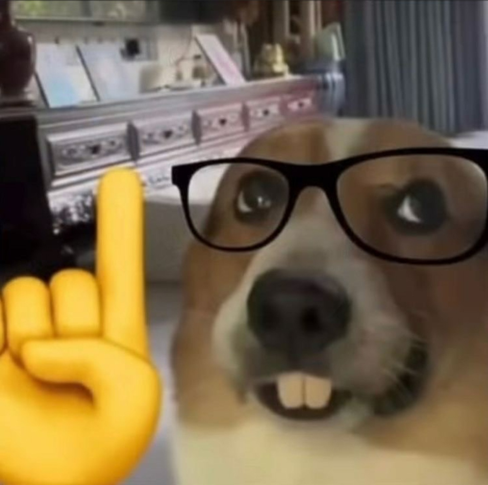
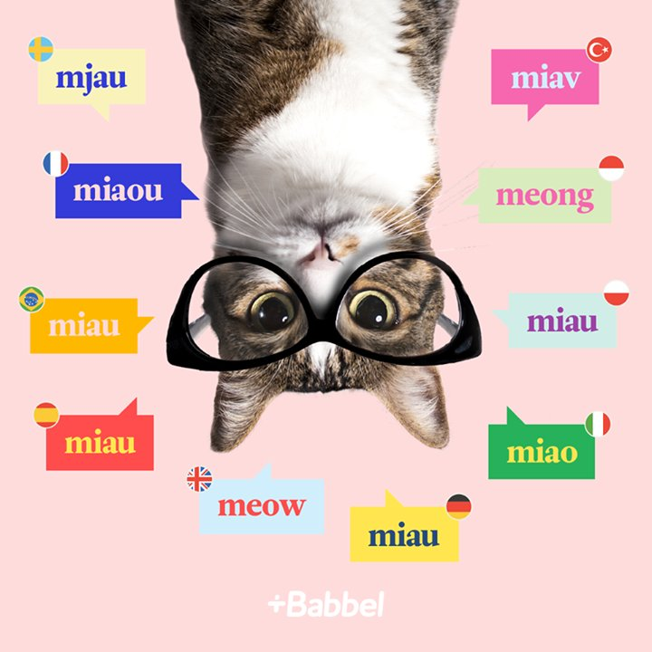
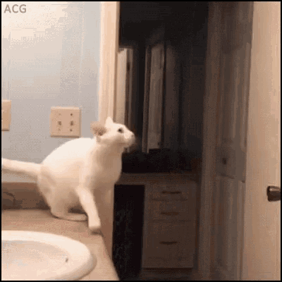
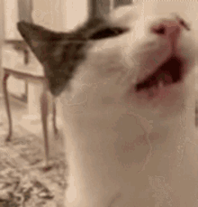

Alexander's Resume
Me:

Summary:
Previous senior game tester and QA Engineer, looking forward to a career in the gaming industry.
Education:

Highschool Graduation:
Victor Babes National Highschool
College:
University of Bucharest (Biology - Ecology section) ~ 6 months
Work experience:
01/08/2018 – 19/06/2023 Bucharest, Romania
SENIOR VIDEO GAME TESTER AND QA TESTER UBISOFT ROMANIA
- Vast knowledge of identifying and submitting issues using tools such as Jira (5+years)
- Experience with Black box, White box and Grey box testing
- Experience with creating documentation (test plans, test scenarios, test cases and guides/
first look documents for new employees) using Microsoft Excel, Power Point, and Word
- Managing documents for the current project using Miro, Confluence or Jira Dashboards
- Vast knowledge of Android, iOS and Windows testing (5+ years)
- Vast testing knowledge on Mobile, Desktop, Apple TV and MacBook devices (5+ years)
- Vast experience with in testing different types of game of all genres, both single player and
multiplayer
- Coordinating the team in the absence of the team lead by assigning colleagues on the
required tasks while also managing and keeping track of their progress
- Keeping a close contact with the development team and participating in daily calls regarding
updates and progress of the project together with the team leads and managers
- Creating and distributing a series of helpful updates and documents at the start of each day
for helping my team throughout the day
- Experience with planning, testing and release of multiple projects (SDLC)
26/06/2023 – 11/08/2023 Kyiv, Ukraine
QA ENGINEER ILOGOS
- Basic knowledge of Unity Hub and WebGL testing
- Basic knowledge of PlayFab, GitHUB and Sourcetree
- Basic knowledge of API platforms - Postman
- Creating and editing documentation for different areas of the project in direct collaboration
with the development team
Languages:

- Mother languages : Romanian
- Other languages : English (C1)
Additional Skills:

MANAGEMENT AND LEADERSHIP SKILLS:
- Coordinating my colleagues into completing the required daily/weekly tasks
currently assigned on the project while keeping track of the overall progress.
- Task management: Assuring the completion of different tasks assigned to our team by the
project manager
- Performance Evaluation: Assessing the performance of individuals and teams, providing
feedback to my team lead and manager, and implementing performance improvement plans for
my colleagues if needed.
- Motivation: Encouraging and empowering my colleagues, recognizing their achievements, and
providing support when needed
ORGANISATIONAL SKILLS
- Documentation Management: Experience with creating required or helpful documents for both
myself and the team in order to assure an easier testing process of the project.
- Time Management: Effectively allocating my time to various tasks, setting priorities, and meeting
deadlines. I sometimes use tools like calendars and to-do lists to assist me in time management. I
am also a very punctual person, I would rather be 30 minutes earlier than 30 minutes late for
work.
- Prioritization: Identifying the most important and urgent tasks and focusing on them first,
keeping a close eye on their deadline.
- Self-Discipline I always try to stick to schedules, avoid distractions, and maintain focus on tasks.
COMMUNICATION AND INTERPERSONAL SKILLS
- Adaptability: Able to adapt to both working alone on a project or in a team.
- Networking: Building and maintaining relationships with people in my professional and personal
life to exchange information, support, and opportunities.
- Feedback and Constructive Criticism: I am used to provide feedback or criticism in a way that is
constructive, specific, and focused on improvement rather than blame.
- Understanding and Guidance: I often listen and help my colleagues whenever they make a
mistake or miss a deadline, always resulting in a solution that assures the continuation of the
testing process without any issues.
- Fast learner: I have the habit to understand, absorb, and apply information or instructions for a
new tool, game or process that I am excited about faster than the average person.
-
Learning Enthusiast: I am passionate and eager to learn new processes, technologies and tools
that might help easing up the testing or development process of a project.
Hobbies and Interests

- Gaming: I've been playing video games since my first years of kindergarten and I lost the count of
how many games of different genres on different platforms I've finished throughout the years.
- Art: Always excited to visit museums, read artbooks and mangas and watching videos about
painting, drawing or digital art creation processes.
- Cats: I love them, they are my favorite animals and pets and I've been surrounded by them since I
was a kid, cats will forever have a special place in my heart.
- E-sports/Streaming: I have never really been a sporty and active person and I could not get into
any IRL sports, but I often watch competitive video game tournaments whenever there is
something interesting going on. I always watch a bunch of streamers from time to time.
- Movies: A few years ago I started going out to the cinema very often and ever since then I've
started to develop a passion for movies, which led me to watch a lot of movies from different
genres, my favorite being horror movies with a psychological or slow burn theme attached to
them.
Contact:
Git stuff Linkedin